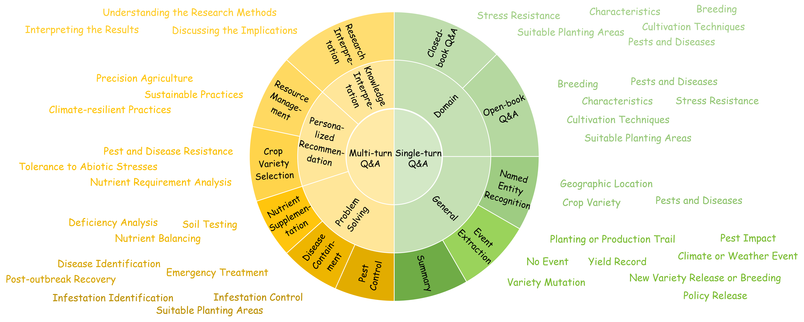
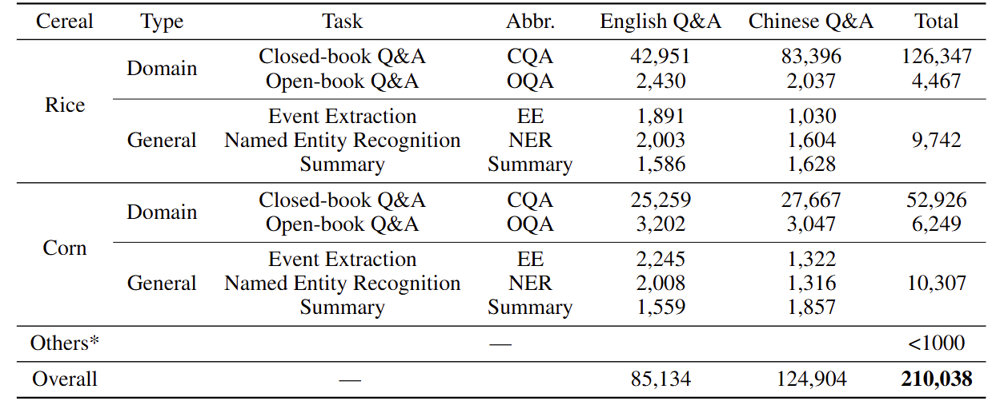
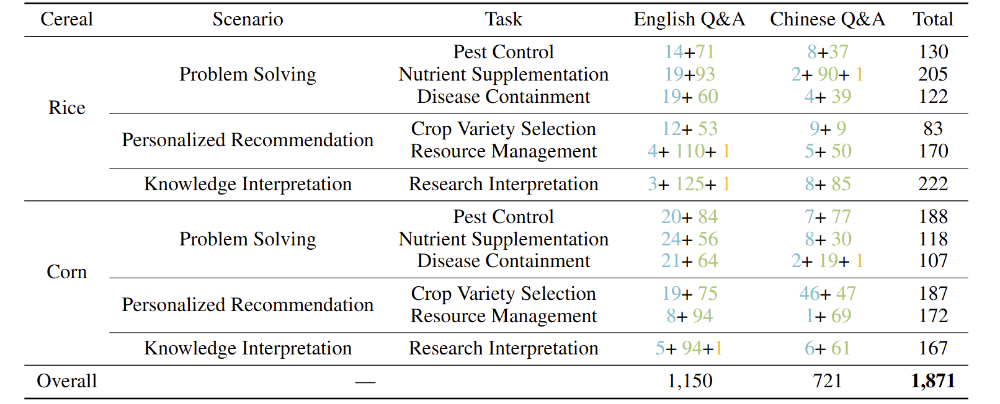

📚 Crop Dataset



Blue
denotes 3-turn dialogue,green
denotes 4-turn dialogue, andyellow
denotes 5-turn dialogue.Large language models (LLMs) have demonstrated remarkable efficacy across knowledge-intensive tasks. Nevertheless, their untapped potential in crop science presents an opportunity for advancement. To narrow this gap, we introduce CROP, which includes a novel instruction tuning dataset specifically designed to enhance LLMs’ professional capabilities in the crop science sector, along with a benchmark that serves as a comprehensive evaluation of LLMs’ understanding of the domain knowledge. The CROP dataset is curated through a task-oriented and LLM-human integrated pipeline, comprising 210,038 single-turn and 1,871 multi-turn dialogues related to crop science scenarios. The CROP benchmark includes 5,045 multiple-choice questions covering three difficulty levels. Our experiments based on the CROP benchmark demonstrate notable enhancements in crop science-related tasks when LLMs are finetuned with the CROP dataset. To the best of our knowledge, CROP dataset is the first-ever instruction tuning dataset in the crop science domain. We anticipate that CROP will accelerate the adoption of LLMs in the domain of crop science, ultimately contributing to global food production.
Blue
denotes 3-turn dialogue,green
denotes 4-turn dialogue, andyellow
denotes 5-turn dialogue.blue
, where the accuracy has generally improved across various difficulty levels.The dataset and benchmark used in this project are CC BY NC 4.0 (allowing only non-commercial use).